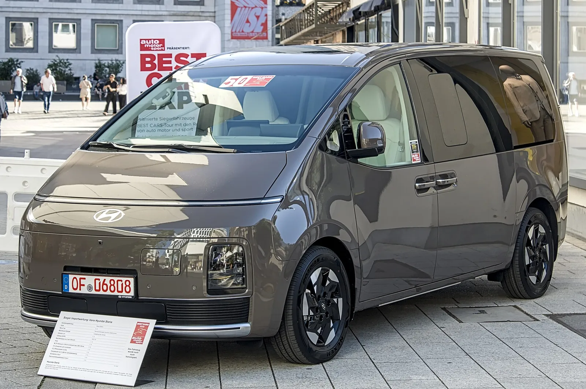
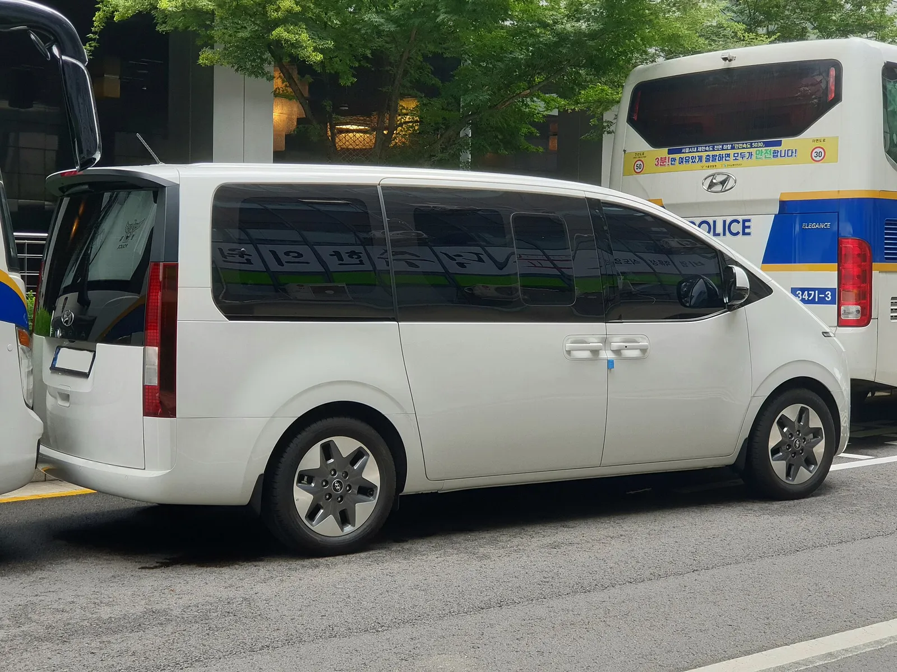
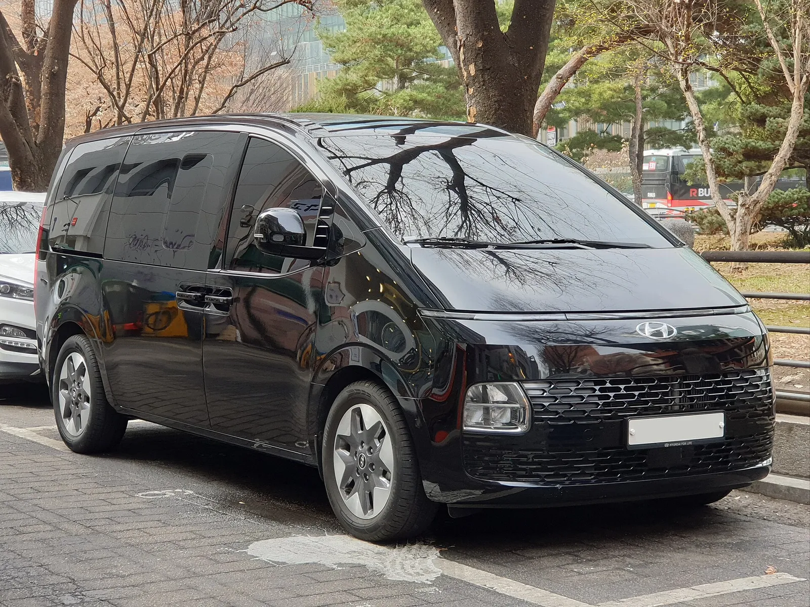
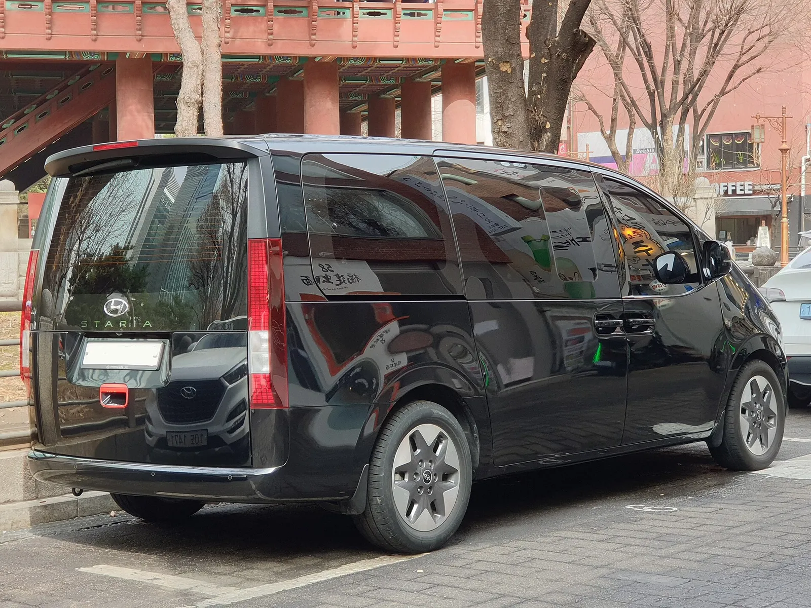
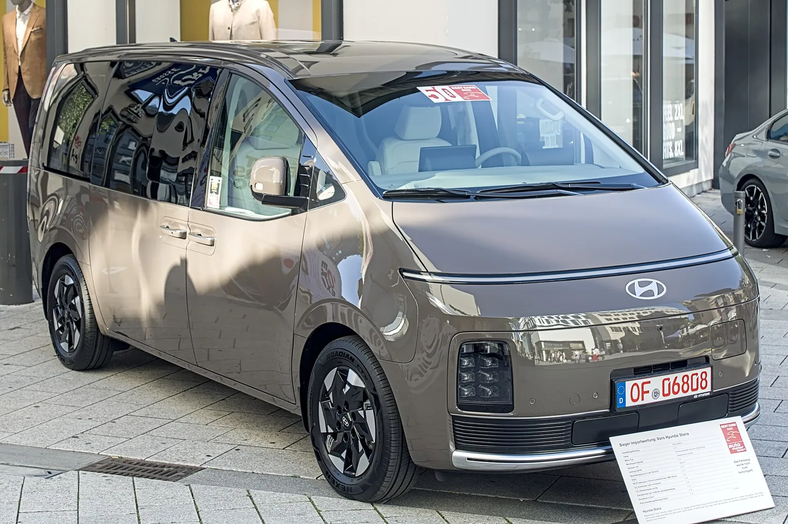
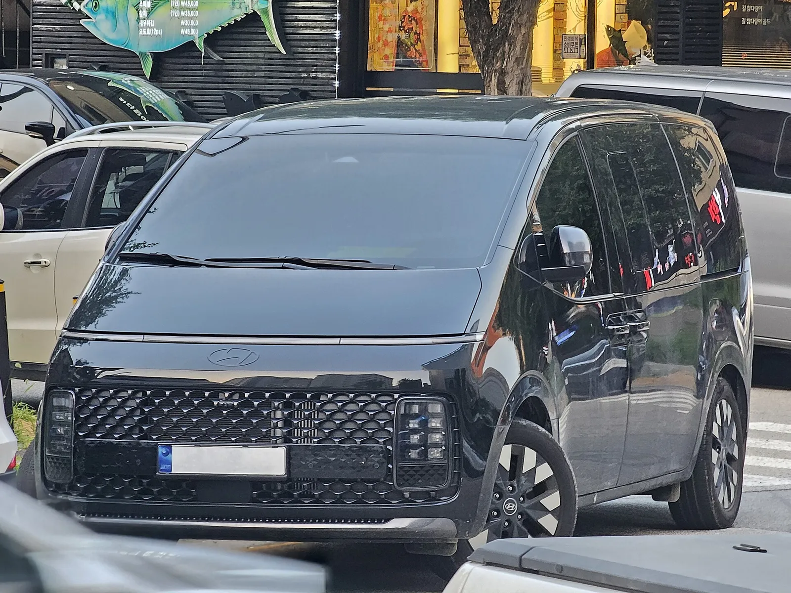
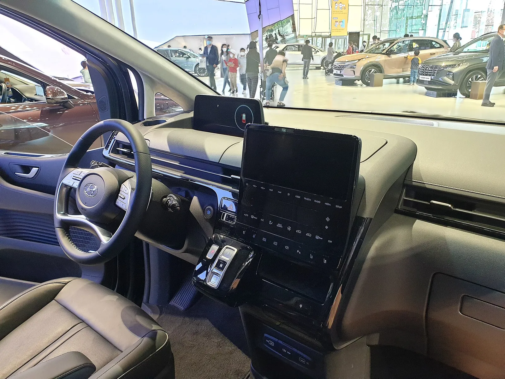
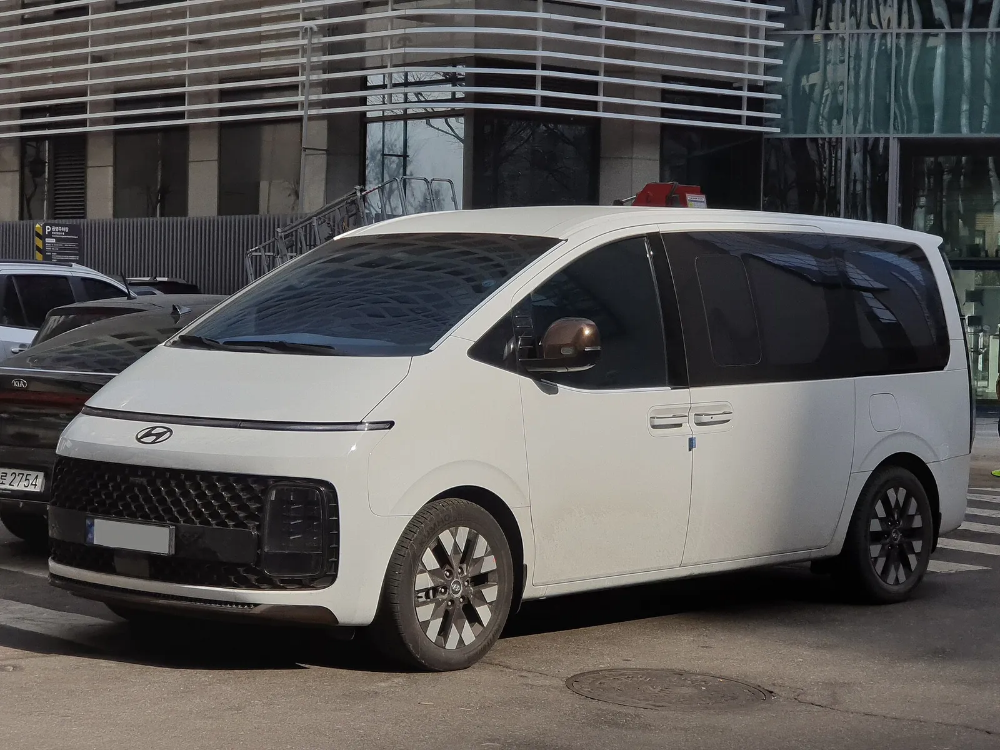
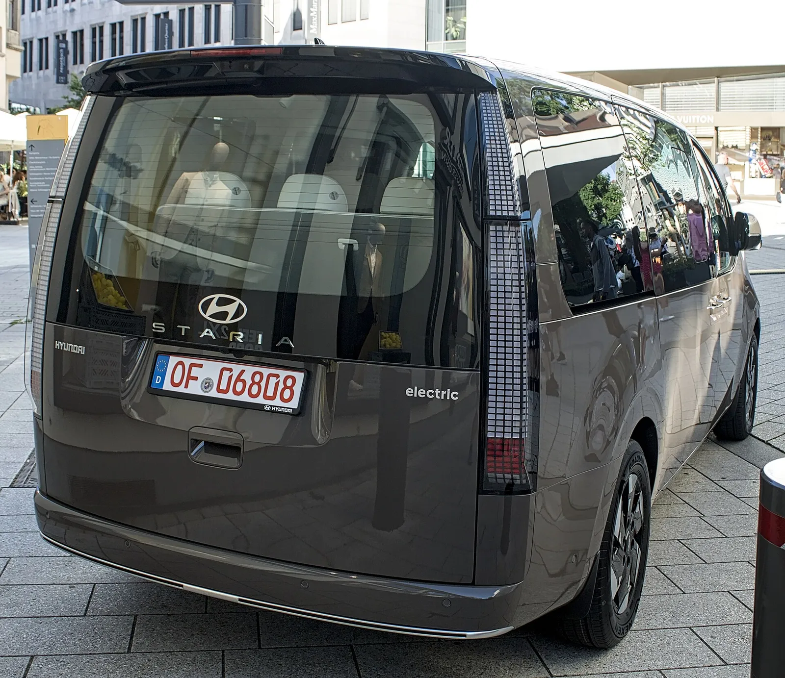
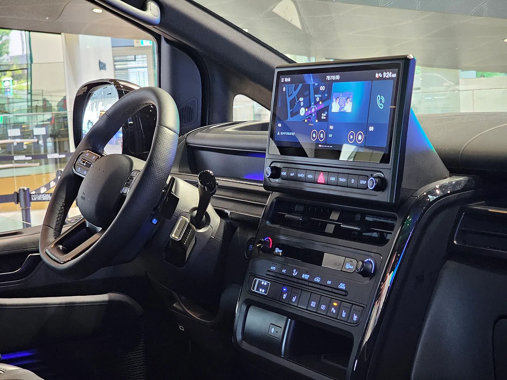

▲ 스타리아 일렉트릭(실제 전기차) 전면 좌측. 유럽 사양 전시 차량이며 국내 11인승 투어러와는 사양이 다를 수 있다 ⓒ Alexander Migl (Wikimedia Commons, CC BY-SA 4.0)
오토트리뷴은 10월 4일 스타리아 일렉트릭 출고 대기 기사(46123번)에서 10월에 계약하면 3·5·6·7인승은 2~3개월, 11인승은 4~5개월이 걸린다고 전했다. 11인승은 인수가 내년 2~3월에 걸린다. 같은 날 보조금 기사(46124번)는 내년 출고가 곧 지원액 변경을 뜻하는 것은 아니지만, 올해 받은 견적만으로 내년 차량 대금까지 확정할 수는 없다는 취지로 전했다. 계약했다고 보조금까지 확보되는 것은 아니라는 뜻이다(제목은 이 취지를 카프리즘이 요약한 표현이다). 이 글은 보도만 옮기지 않고 기후에너지환경부의 「2026년 전기자동차 보급사업 보조금 업무처리지침」을 직접 열어 확인한 규정과 트림별 실구매가 계산표로 풀었다.
스타리아 일렉트릭의 제원·트림 가격은 스타리아 EV 가격·제원 기사에서 다뤘다. 이 글은 "언제 받느냐에 따라 보조금이 어떻게 바뀌나"에만 집중한다.
1. 출고 일정 — 같은 스타리아 EV인데 11인승만 내년이다
오토트리뷴은 스타리아 출고 대기(46123번)를 파워트레인·인승별로 나눠 전했다. LPi와 하이브리드는 3주 안팎이지만 전기차는 길다. 3·5·6·7인승 전기차는 2~3개월이라 10월 계약 시 12월~내년 1월 인수가 가능하고, 11인승은 4~5개월을 적용하면 내년 2~3월이다. 같은 날 별도 기사(46124번)는 내년 출고가 곧 지원액 변경을 뜻하는 것은 아니지만 올해 견적만으로 내년 차량 대금을 확정할 수는 없다는 취지로 문제를 짚었다. 이 일정은 매체가 정리한 영업 현장 기준이며 현대차가 공식 출고 일정을 공표한 것은 확인하지 못했다.
| 구분 | 대기 기간 | 10월 계약 시 인수 | 보조금 연도 |
|---|---|---|---|
| LPi·하이브리드(참고) | 약 3주 | 10월 말~11월 중순 | 해당 없음(내연·하이브리드) |
| 전기 3·5·6·7인승 | 2~3개월 | 12월~내년 1월 | 연말 출고 가능 시 올해, 지연 시 내년 |
| 전기 11인승 | 4~5개월 | 내년 2~3월 | 내년(2027년) 공고 적용 가능성이 큼 — 카프리즘 해석 |

▲ 서울에서 촬영된 스타리아 투어러(내연기관 모델, EV 아님). 인승 구성은 사진으로 확정하지 않았다 ⓒ Damian B Oh (Wikimedia Commons, CC BY-SA 4.0)
2. 트림별 보조금 유형 — 11인승은 전기승합, 카고는 전기화물
스타리아 일렉트릭은 카고(3·5인승), 투어러(11인승), 라운지, 리무진(6인승)으로 구성되고 4월 하순 출시됐다. 보조금은 같은 차대라도 등록 유형에 따라 전혀 다른 주머니에서 나온다. 기후에너지환경부 지침은 승차정원 15인 이하이면서 길이 7m 미만인 중형 승합은 소형 전기승합 산출방식을 적용한다고 정한다. 매체들은 이 틀에서 11인승이 "소형 전기승합차 최대 1,500만 원"을 받는다고 전했다.
| 트림 | 인승 | 출고가 | 보조금 유형(매체 해석) | 국비 규모 |
|---|---|---|---|---|
| 카고 | 3인승 | 5,792만 원 | 전기화물 | 매체 "약 1,600만 원" — 확정액 확인 못 함 |
| 카고 | 5인승 | 5,870만 원 | 전기화물 | 위와 같음 |
| 투어러 | 11인승 | 6,029만 원 | 소형 전기승합 | 최대 1,500만 원(지침). 어린이통학용 최대 3,000만 원 |
| 라운지 | 11인승(보도 다수) | 6,549만 원(보도에 따라 다름) | 소형 전기승합(라운지를 승용으로 본 보도도 있음) | 매체마다 갈림 — 확정하지 않음 |
| 리무진 | 6인승 | 8,787만 원 | 전기승용 | 2026 승용 가격계수 8,500만 원 이상 0%(지침 별표1) |
📍 라운지 보조금 유형이 매체마다 다른 이유
한국경제·TF 보도는 라운지를 11인승으로 전했고, 이 경우 투어러와 같은 승합 계열로 보는 매체(래디언스리포트)가 있다. 반면 일부 포털 기사는 라운지·리무진을 전기승용으로 묶어 약 300만 원 수준 보조금이라고 썼다. 라운지 출고가도 위키트리는 11인승 6,549만 원(7인승 6,597만 원)으로 전했으나 일부 자동차 DB(carwiki)는 6,995만 원으로 달리 적어 보도에 따라 다르다. 현대차 공식 가격표(hyundai.com)는 이번 조사에서 열어 확인하지 못했다. 정확한 분류는 계약 전 딜러·환경공단 대상 차종 목록으로 확인해야 한다.

▲ 검은색 스타리아 투어러(내연기관 모델, EV 아님). 전기차는 전면 그릴 디자인이 다르다 ⓒ Damian B Oh (Wikimedia Commons, CC BY-SA 4.0)
3. 지침이 정한 국비·지방비 구조 — 승합은 선정부터 다르다
기후에너지환경부는 1월 13일 「2026년 전기자동차 보급사업 보조금 업무처리지침」을 확정해 무공해차 통합누리집(ev.or.kr)에 공개했다. 카프리즘이 지침 원문을 열어 확인한 승합 관련 조항은 다음과 같다. 이 판은 2026년 1월 문서이며 이후 개정 여부는 확인하지 못했다.
| 항목 | 지침 내용 | 의미 |
|---|---|---|
| 소형 승합 국비 상한 | 대형 7,000만, 중형 5,000만, 소형 최대 1,500만 원 | 11인승 스타리아 EV 국비 상한 1,500만 원 |
| 소형 적용 기준 | 중형승합이어도 길이 7m 미만·15인 이하면 소형 산출방식 | 11~15인승이 소형 승합으로 계산 |
| 어린이통학용 | 소형 최대 3,000만 원, 신고필증 제출 필요 | 통학 신고 없이는 받을 수 없음 |
| 지방비 비율 | 지자체는 국비의 30% 이상 지방비 편성(별표2) | 국비 1,500만 원이면 지방비 최소 450만 원 |
| 선정 주체 | 신청은 지자체가 접수하고, 전기승합은 기후부가 지원대상 선정 여부를 통보(필요 시 자체평가위원회 구성, 5-1-3) | 11인승은 지자체 접수 후에도 기후부 통보를 기다리며, 통보가 없으면 보조금을 못 받을 수 있다 |
| 출고 기한 | 선정일로부터 2개월 지나도 출고 안 되면 선정 취소 또는 대기자 변경 | 11인승 4~5개월 대기와 정면 충돌 |
| 지급 절차 | 출고·등록 후 10일 이내 신청, 14일 이내 지급 | 사업자(법인·개인사업자)는 한국환경공단 경로 |

▲ 검은색 스타리아 투어러 후면(내연기관 모델, EV 아님) ⓒ Damian B Oh (Wikimedia Commons, CC BY-SA 4.0)
4. "2개월 이내 출고" — 11인승 4~5개월과 어떻게 맞물리나
가장 중요한 조항은 지침 5-1-3이다. 지자체는 지원신청서를 받으면 7일 안에 신청인(또는 대행 제작사)에게 "2개월 안에 출고되지 않으면 대상자 선정이 취소되거나 대기자로 바뀔 수 있다"고 통지해야 한다. 선정일부터 2개월이 지났는데도 차량대금 납부와 세금계산서 발급이 안 되면 선정을 취소하거나 대기자로 돌려야 한다. 서울시의 2025년 하반기 공고도 자격부여일부터 2개월 이내에 출고·등록이 가능할 때 구매 지원신청서를 내도록 했다(서울시 환경분야 누리집 공고 기준). 서울시 2026년 보도자료(1월 26일 접수 시작)도 신청 대상을 "2개월 이내 출고 가능한 차량에 한정"한다고 밝혀, 2개월 조건은 올해 서울 공고에도 적용된다.
그러면 10월에 계약한 11인승 구매자가 올해 보조금 대상자로 선정될 경우 선정일부터 2개월 안에 차를 받을 수 없다. 반대로 선정 시점을 출고 직전으로 미루면 내년 공고와 단가를 적용받을 가능성이 크다. 이는 지침 조문을 바탕으로 한 카프리즘의 해석이며, 올해 견적이 내년 신청에 그대로 이월된다는 규정은 지침에서 발견하지 못했다. 예산의 '전년도 이월분'은 보고 서식에 있으나 개별 신청자 지위의 이월과는 다른 문제다.
| 시나리오 | 조건 | 결과 | 근거 |
|---|---|---|---|
| A. 올해 선정 후 내년 인수 | 선정일부터 2개월 초과 | 선정 취소·대기자 변경 가능 | 지침 5-1-3 |
| B. 내년 공고로 신청 | 출고 2개월 이내 시점에 신청 | 2027년 단가·예산·지침 적용(미확정) | 2027 지침 확인 못 함 |
| C. 제작사 사정으로 대규모 지연 | 기후부가 불가피하다고 인정 | 선정 유지 기한 한시 연장 가능 | 지침 5-1-3 단서(개별 구매자 요청 아님) |
| D. 계약만 하고 신청 안 함 | 견적서 보조금은 참고치 | 보조금 확보 아님 | 오토트리뷴 46124번 기사(올해 견적만으로 내년 대금 확정 불가) |
✅ 계약 전 확인할 5가지
- 계약서에 보조금 미확정 시 해지 또는 가격 재산정 조항이 있는가
- 출고 예정일을 서면(문자·메일)으로 받았는가, 2개월 규정과 맞는가
- 구매 지자체 공고의 잔여 물량·접수 시작일(무공해차 통합누리집에서 확인)
- 개인(지자체 접수)인지 사업자(한국환경공단 접수)인지, 어느 경로인지
- 단순 변심으로 취소하면 손실 변상 책임이 구매자에게 갈 수 있다는 지침 안내

▲ 스타리아 일렉트릭(실제 전기차) 전면 우측. 유럽 사양 전시 차량이며 국내 11인승 투어러와는 사양이 다를 수 있다 ⓒ Alexander Migl (Wikimedia Commons, CC BY-SA 4.0)
5. 보조금 실구매가 비교표 — 국비·지방비 가정별 계산
한국경제는 출시 기사에서 서울시 기준 정부·지자체 보조금을 받으면 카고 3·5인승, 투어러 11인승, 라운지 11인승을 4천만 원대부터 구매할 수 있을 것으로 보인다고 전했다(현대차 자료 인용 여부는 확인하지 못했다). 카프리즘이 이 문구가 성립하는 조건을 역산했다. 가정: ① 국비는 소형 승합 상한 1,500만 원이 그대로 적용된다 ② 지방비는 지침 최소선인 국비의 30%(450만 원)와 50%(750만 원) 두 가지를 둔다 ③ 서울시 2026년 승합 지방비 단독 금액은 공고에 분리 표기가 없어 확인하지 못했으나, 서울시가 소형승합 합계 최대 1,950만 원을 공표해 이 표 뒤에 별도로 계산한다 ④ 부가세 환급·취득세·등록비 등 부대비용은 제외한다.
| 트림 | 출고가 | 국비만(지방비 0) | 국비 1,500 + 지방비 30%(450) | 국비 1,500 + 지방비 50%(750) |
|---|---|---|---|---|
| 투어러 11인승 | 6,029 | 4,529 | 4,079 | 3,779 |
| 라운지 11인승(승합 가정) | 6,549 | 5,049 | 4,599 | 4,299 |
| 투어러 11인승 어린이통학용(국비 3,000 + 지방비 30%=900) | 6,029 | 3,029 | 2,129(지방비 30% 적용) | — |
| 카고 3인승(국비 약 1,600 가정, 지방비 미반영) | 5,792 | 4,192 | — | — |
| 카고 5인승(국비 약 1,600 가정, 지방비 미반영) | 5,870 | 4,270 | — | — |
투어러 11인승은 국비와 최소 지방비만 합쳐도 4,079만 원으로 "4천만 원대"가 성립한다. 지방비가 0이면 4,529만 원, 보조금을 전혀 못 받으면 6,029만 원 그대로다. 어린이통학용 계산은 어린이통학차량 신고필증 제출이 전제여서 일반 구매자에게는 해당되지 않는다.
서울시 2026년 공고로 다시 계산하면
서울시는 올해 1월 보도자료에서 "전기승합차(버스)는 각각 최대 대형 승합 1억 원, 중형 승합 7,000만 원, 소형승합 1,950만 원 지원한다"고 밝혔고, 소형승합은 2026년에 신설했다고 적었다. 승합 상반기 물량은 158대(어린이 통학 21대는 별도 표기)로 공지됐다. 법인·개인사업자는 한국환경공단, 개인은 기존과 같은 무공해차 통합누리집에서 신청하며 접수일 기준 서울 30일 이상 거주·사무소 보유자가 대상이다. 이 1,950만 원은 국비와 시비를 합친 최대 금액이고, 국비·시비 분리 내역은 공고에 없다. 국비 상한 1,500만 원에 30%인 450만 원을 더한 값과 정확히 같아 앞의 가정과 맞지만, 이 분리는 카프리즘의 추정이다.
| 트림 | 출고가 | 수식 | 실구매가(최대 지원 가정) |
|---|---|---|---|
| 투어러 11인승 | 6,029 | 6,029 − 1,950 | 4,079 |
| 라운지 11인승(승합 분류 가정) | 6,549 | 6,549 − 1,950 | 4,599 |
| 라운지 11인승(보도 6,995 적용 시) | 6,995 | 6,995 − 1,950 | 5,045 |
한계는 분명하다. 이는 "최대" 금액을 전액 받는다는 가정이며, 부가세 환급·취득세·등록비 등 부대비용은 제외했다. 라운지가 승합으로 분류되는지는 확정하지 않았다. 또 서울 승합 물량이 한정돼 있어 접수 시점에 잔여 물량이 남아 있어야 한다.
대기 기간별 "선정 가능 시점" 역산
지침 5-1-3의 2개월 조건을 인수일에서 거꾸로 세면, 선정(또는 서울 공고의 신청)이 이뤄져야 할 시점이 나온다. 계산식은 "10월 4일 + 대기 개월 수 = 인수 예정일", "인수 예정일 − 2개월 = 2개월 안에 출고되는 선정 시점"이다. 달력상 단순 계산이며 실제 출고일은 제작사 사정에 따라 바뀐다.
| 구분 | 대기 | 인수 예정일 | 선정이 이 날짜 이후여야 안전 |
|---|---|---|---|
| 3·5·6·7인승 | 2개월 | 2026-12-04 | 2026-10-04(즉시) |
| 3·5·6·7인승 | 3개월 | 2027-01-04 | 2026-11-04 |
| 11인승 | 4개월 | 2027-02-04 | 2026-12-04 |
| 11인승 | 5개월 | 2027-03-04 | 2027-01-04 |
11인승은 올해 12월 초~내년 1월 초 이후에 선정·신청이 이뤄져야 2개월 규정과 맞는다. 12월 이후 접수는 올해 예산과 내년 공고 중 어느 쪽에 걸리는지가 갈리므로 앞의 B 시나리오와 연결된다. 이 역시 규정 조문에 따른 해석이며 지자체 실무 처리는 확인하지 못했다.
❓ 자주 묻는 질문
서울 사람이 아니어도 서울 보조금을 받나? 서울시 보도자료는 접수일 기준 서울에 30일 이상 거주하거나 사무소를 둔 개인·개인사업자·법인·공공기관을 대상으로 적었다.
개인사업자는 어디서 신청하나? 서울시 보도자료는 법인·개인사업자는 한국환경공단, 개인은 기존과 같은 경로라고 안내했다.
10월에 계약한 11인승이 올해 선정되면? 선정일부터 2개월 안에 출고되지 않으면 취소 또는 대기자 변경 대상이다(지침 5-1-3).

▲ 흰색 스타리아 투어러(내연기관 모델, EV 아님). 인승 구성은 사진으로 확정하지 않았다 ⓒ Damian B Oh (Wikimedia Commons, CC BY-SA 4.0)

▲ 스타리아 라운지(내연기관 모델, EV 아님). 라운지의 보조금 유형은 매체마다 달라 확정하지 않았다 ⓒ Damian B Oh (Wikimedia Commons, CC BY-SA 4.0)
6. 올해 못 받으면 얼마가 달라지나 — 승용·승합·화물 비교
트림 선택이 11인승이냐 아니냐에 따라 보조금 격차가 크다. 토인포 분석은 11인승 최대 1,500만 원, 5인승 카고 약 1,600만 원, 6~7인승 승용 약 300만 원으로 "1,000만 원 이상 벌어질 수 있다"고 짚었다. 출고가 8,787만 원인 리무진은 지침의 승용 가격계수(8,500만 원 이상 0%)로 보면 보조금이 0이 될 수 있다. 일부 매체는 개별소비세 감면 후 8,500만 원 아래로 내려갈 수 있다고 썼으나 지침은 가격계수를 차량인증사양별 기본가격에 적용한다고 정했으며, 개별소비세 감면 후 판매가와 같은 기준인지는 확인하지 못했다.
| 유형 | 국비 규모 | 기준 가격선 | 비고 |
|---|---|---|---|
| 소형 전기승합(11인승) | 최대 1,500 | 지침상 별도 가격선 확인 못 함 | 선정 기후부, 지방비 국비의 30% 이상 |
| 전기화물(카고) | 약 1,600(매체) | 소형 이하 기본가격 8,500 미만 계수 1.0 | 택배용 추가 10% 등(지침) |
| 전기승용(리무진 등) | 중형 이상 최대 580, 전환지원 최대 100 별도 | 5,300 미만 100%, 8,500 미만 50%, 이상 0 | 2027년 5,000·8,000으로 하향 예정은 2027 보조금 기준 기사 참고 |
| 어린이통학용 소형 승합 | 최대 3,000 | 통학차량 신고필증 | 일반 승합과 별도 산정 |

▲ 스타리아 라운지 실내 전시 차량(내연기관 모델, EV 아님) ⓒ Damian B Oh (Wikimedia Commons, CC BY-SA 4.0)
7. 지금 계약할까, 기다릴까 — 잔여 예산과 대안
올해 안에 받아야 하는 사정이 있다면 3·5·6·7인승 전기차는 12월~1월 인수가 가능하므로 인승 선택부터 바꿔야 한다. 11인승이 꼭 필요하다면 올해 견적은 참고치로만 보고, 내년 공고 시점의 국비 단가와 구매 지자체 지방비를 다시 확인하는 편이 안전하다. 지자체 예산은 소진되기 쉬워 전기차 보조금 잔여 예산 확인 기사에서 정리한 무공해차 통합누리집 잔여 물량 조회가 필요하다. 승용 기준선 변화는 2027 보조금 기준선 기사에서, 지역별 지방비 차이는 전국 지자체 보조금 비교 기사에서, 내년 예산 방향은 2027 보조금 예산 확대 기사에서 다뤘다.
11인승 전동 PBV를 비교하려는 구매자는 2027년 하반기 국내 출시 예정인 기아 PV7 공개 기사도 참고할 만하다. 다만 PV7의 보조금 유형과 가격은 이번 조사에서 확인하지 못했다. 스타리아가 해외에서 어떤 분류 문제를 겪는지는 스타리아 미국 부재 기사에 정리했다. 정부 지침의 원문은 무공해차 통합누리집에서 확인할 수 있다. 무공해차 통합누리집 바로가기

▲ 흰색 스타리아 라운지(내연기관 모델, EV 아님) ⓒ Damian B Oh (Wikimedia Commons, CC BY-SA 4.0)
8. 확인하지 못한 항목과 숫자의 한계

▲ 스타리아 일렉트릭 후면. 테일게이트의 "electric" 표기로 전기차임을 확인했다. 유럽 사양 전시 차량이다 ⓒ Alexander Migl (Wikimedia Commons, CC BY-SA 4.0)
| 항목 | 상태 |
|---|---|
| 현대차 공식 출고 일정 | 공표된 것 확인 못 함 — 오토트리뷴 영업 현장 기준 보도만 확인 |
| 현대차 공식 가격표 홈페이지 | hyundai.com 가격 페이지는 이번에도 열람하지 못함(주소 404). 투어러 11인승 6,029만 원은 카눈 자동차 DB(제3자)와 TF·한국경제·비즈워치 보도로 교차 확인 |
| 스타리아 EV 소형 승합 국비 확정액 | "최대 1,500만 원" 상한만 확인, 차종별 확정액 미확인 |
| 서울시 2026년 소형승합 지원액 | 서울시 보도자료로 합계 최대 1,950만 원 확인. 국비·시비 분리 내역과 접수 공고 세부 조건은 미확인 |
| 2027년 전기승합 단가·지침 | 미공표 확인 |
| 올해 견적의 내년 신청 이월 규정 | 지침에서 발견하지 못함 |
| 지침 원문 대조 범위 | PDF 원문(2026.1.8판)에서 4-2-1·4-2-2·5-1-3·별표1(가격계수)·별표2를 직접 대조해 확인. 이후 개정본은 미확인 |
| 지침 개정(6월) 여부 | 커뮤니티가 6월 23일 개정을 언급했으나 원문 확인 못 함. 10월 4일 재검색에서도 개정 공지를 찾지 못했고 ev.or.kr 공지 페이지는 열람하지 못함 |
| 배터리·주행거리 | 보도마다 371~425km로 갈려 이 글에서는 비교 제외(공식 최대 387km는 보도 기준) |

▲ 스타리아 계열 앞좌석 대시보드(파일명상 리무진, 내연기관 모델, EV 아님) ⓒ Damian B Oh (Wikimedia Commons, CC BY-SA 4.0)
9. 요약
스타리아 EV 11인승은 10월 계약 시 인수가 내년 2~3월이고, 계약이 곧 보조금 확보는 아니다. 오토트리뷴은 올해 견적만으로 내년 차량 대금을 확정할 수는 없다고 전했다(내년 출고가 곧 지원액 변경을 뜻하진 않는다는 단서도 달았다).
기후에너지환경부 지침상 11인승은 소형 전기승합으로 국비 최대 1,500만 원이며, 지방비는 국비의 30% 이상이다. 선정 후 2개월 안에 출고되지 않으면 선정이 취소되거나 대기자로 바뀔 수 있어 4~5개월 대기와 맞지 않는다.
카프리즘 계산으로 투어러 11인승은 국비 상한 1,500만 원 전액과 지방비 30%(450만 원)를 가정하면 약 4,079만 원이다. 서울시는 소형승합 합계 최대 1,950만 원을 공표해 같은 4,079만 원이 나오지만, 국비·시비 분리, 2027년 단가와 올해 견적의 이월 여부는 확인하지 못했다. 계약 전 출고일 서면 확인과 해지 조항 점검이 필요하다.